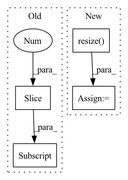

Pattern ID :6115

Before Change
def augmentation(self, img, label):
rate = tf.random.uniform(shape=[2], minval=0.5, maxval=2.0, dtype=tf.float32, name="resize_rate") //seed=121,
r_shape = tf.cast(tf.cast(tf.shape(img)[1:3],tf.float32) * rate, tf.int32)
self.switcher_img = {
"original" : img,
"scaling" : tf.image.resize_with_crop_or_pad(img, r_shape[0], r_shape[1]),
After Change
}
for case in self.augmentation_list:
img = self.switcher_img.get(case, img)
img = self.resize(img)
return img, label
def scale(self, img):
try:
In pattern: SUPERPATTERN
Frequency: 3
Non-data size: 4
Instances
Fragment ID: 21130352
Project Name: camma-public/cholect45
Commit Name: 790744de7c8b504394359549313b0b4eacd70136
Time: 2022-05-06
Author: nwoye.chinedu@gmail.com
File Name: dataloader_tf.py
M Class Name: CholecT50
N Class Name: CholecT50
M Method Name: augmentation(3)
N Method Name: augmentation(3)
M Parent Class:
N Parent Class:
M File Name: dataloader_tf.py
N File Name: dataloader_tf.py
M Start Line: 114
M End Line: 128
N Start Line: 117
N End Line: 127
'>
Before Change
source_pp = source_layer["positional_embedding:0"] // weights
else:
source_pp = source_layer.pp // layer
self.pp.assign(tf.image.resize(source_pp, self.pp.shape[1:3], method=method))
def show_pos_emb(self, rows=16, base_size=1):
import matplotlib.pyplot as plt
After Change
tt = tf.concat([source_pp[:, :-hh * ww], tt], axis=1) // If has cls_token
else:
tt = tf.image.resize(source_pp, [self.height, self.width], method=method)
self.pp.assign(tt)
def show_pos_emb(self, rows=16, base_size=1):
import matplotlib.pyplot as plt
'>
Fragment ID: 21130343
Project Name: leondgarse/keras_cv_attention_models
Commit Name: 8776edc81f38b435615eee79514c4b7b8b88fc67
Time: 2023-01-10
Author: leondgarse@gmail.com
File Name: keras_cv_attention_models/volo/volo.py
M Class Name: PositionalEmbedding
N Class Name: PositionalEmbedding
M Method Name: load_resized_weights(3)
N Method Name: load_resized_weights(3)
M Parent Class: keras.layers.Layer
N Parent Class: keras.layers.Layer
M File Name: keras_cv_attention_models/volo/volo.py
N File Name: keras_cv_attention_models/volo/volo.py
M Start Line: 209
M End Line: 209
N Start Line: 216
N End Line: 226
'>
Before Change
self.input_shape = input_shape[1:-1] if len(input_shape) == 4 else input_shape[:2]
def __call__(self, image, resize_method="bilinear", resize_antialias=False, input_shape=None):
input_shape = self.input_shape if input_shape is None else input_shape[:2]
image = tf.convert_to_tensor(image)
if tf.reduce_max(image) < 2:
image *= 255
image = tf.image.resize(image, input_shape, method=resize_method, antialias=resize_antialias)
After Change
if input_shape is not None:
self.set_input_shape(input_shape)
images = [image] if len(np.shape(image)) == 3 else image
images = [np.array(Image.fromarray(image).resize(self.input_shape)) for image in images]
images = (np.stack(images) - self.mean) / self.std
images = images if backend.image_data_format() == "channels_last" else images.transpose([0, 3, 1, 2])
return functional.convert_to_tensor(images)
'>
Fragment ID: 21130348
Project Name: leondgarse/keras_cv_attention_models
Commit Name: 2f70b0d51c8f2b1f8664f32dc75ecc1001758946
Time: 2023-01-29
Author: leondgarse@gmail.com
File Name: keras_cv_attention_models/common_layers.py
M Class Name: PreprocessInput
N Class Name: PreprocessInput
M Method Name: __call__(5)
N Method Name: __call__(5)
M Parent Class:
N Parent Class:
M File Name: keras_cv_attention_models/common_layers.py
N File Name: keras_cv_attention_models/common_layers.py
M Start Line: 586
M End Line: 601
N Start Line: 609
N End Line: 616